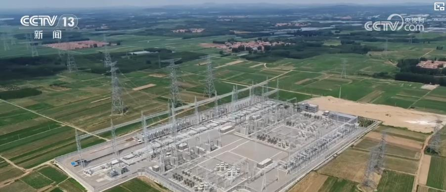
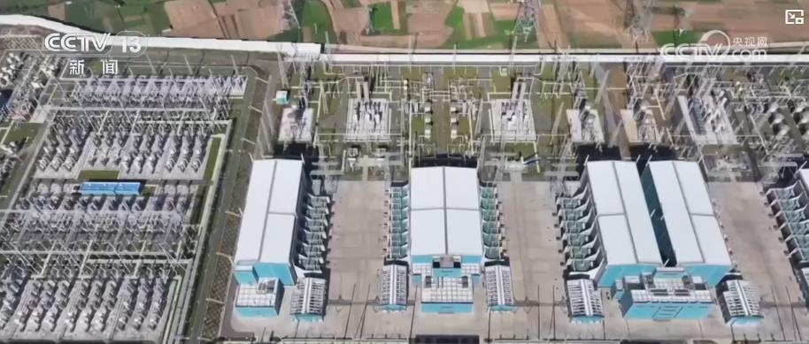
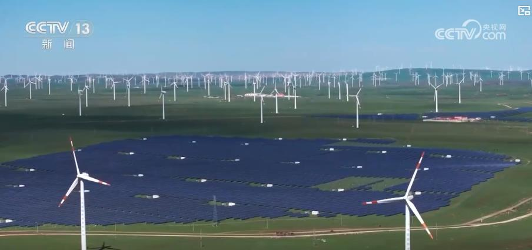

央视网消息：记者2月28日从国家电网了解到，“十五五”期间国家电网将加强电网资源配置能力建设，提升新能源承载能力，服务新能源高质量发展。

据介绍，“十五五”期间，国家电网将加强各级电网建设，力争投产15项特高压直流工程，跨省区输电能力提升35%，区域间电力灵活互济能力扩大两倍以上，满足新能源大范围高效配置需要。

国网发展部副主任 张克：我们将加快推动国家和地方、电源和电网规划衔接，加强区域主网架、配电网与智能微电网协同规划建设，积极服务新型主体发展，保障“十五五”年均不低于2亿千瓦新能源接网和高效消纳，助力新型能源体系建设。

此外，国家电网还将加快系统调节能力建设，预计到2030年，在运在建抽水蓄能装机容量超1.2亿千瓦，经营区新能源发电量占比达30%以上，扩大绿电消费规模，新增用电量需求主要由新能源发电满足。